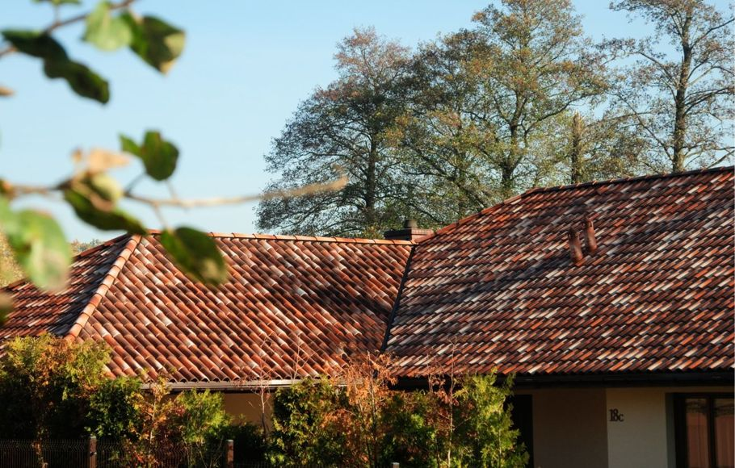

Zadaniem tej strony internetowej oprócz prezentacji oferty najbardziej renomowanego producenta dachówek we Włoszech, jest także próba przybliżenia stylistyki pokryć dachowych wywodzących się z Włoch. Takie pokrycia dachowe są popularne w południowej i zachodniej części Europy, a na świecie stanowią większość: Floryda, Kalifornia (w tym stylowe rezydencje Beverly Hills), cała Ameryka Południowa i Środkowa, Bliski Wschód, Afryka.
Postęp techniczny w zakresie produkcji materiałów ceramicznych we Włoszech spowodował, że dachówki ceramiczne tego typu są obecnie mrozoodporne i dla stylu śródziemnomorskiego otworzyły się nowe terytoria. Dachówki w stylu śródziemnomorskim stają się coraz bardziej popularne również pozostałych krajach Europy, nawet takich jak Niemcy czy nawet Szwecja, gdyż stylistycznie biją na głowę znane nam spłaszczone i oszczędnościowe dachówki jednokolorowe, popularne właściwie tylko w Europie centralnej i północnej.
Jak się Państwo przekonacie, jest to całkowicie odmienne podejście do architektury dachu niż znana nam stylistyka dachówek siermiężnego stylu niemieckiego. PS. Więcej wartościowych informacji o producencie Industrie Cotto Possagno znajdziecie Państwo w „O firmie”.
Zamiast jednokolorowych, często glazurowanych na wysoki połysk dachówek typu płaskiego, mamy tu do czynienia z malarsko udekorowanymi, różnobarwnymi dachówkami o mniej lub bardziej falistym kształcie. Po ułożeniu na dachu tworzą one unikalną impresjonistyczną kompozycję w stylu mnich-mniszka. Dachy te idealnie komponują się z przyrodą oraz klasycznym wykończeniem domu.
W odróżnieniu do dachówek glazurowanych nienaturalnie połyskujących w słońcu niczym lustro lub polerowany plastik, dachy stylu włoskiego delikatnie współgrają z przyrodą. Komponują się z stylowymi wykończeniami budynków w kamieniu i drewnie. Stąd właśnie wywodzi się piękno włoskich i francuskich miasteczek, dworów otoczonych malowniczymi gajami oliwnymi lub winnicami czy zabytkowych budynków Rzymu, Wenecji czy Ravenny.
Warto zapoznać się nad włoskim stylem tworzenia dachów. Państwa dach również może wyglądać jak z bajki, a dom jak piękna i stylowa rezydencja. Po latach doświadczeń wiem, że w Polsce takie dachy podobają się bardzo, i zawsze stanowią lokalną sensację. Najmilszą częścią mojej pracy jest słuchanie pochwał dla dachówek, pochwał od klientów u których efekt finalny przeszedł to czego się spodziewali. Tak więc jedyne czego potrzeba to niebanalnego gustu i nieco odwagi.
Firma Industrie Cotto Possagno przygotowała specjalną linię produktową dachówek o nazwie WINTER. Ta linia dachówek skierowana jest na kraje północne. W skład tej linii wchodzą różne rodzaje dachówek. Z uwagi fakt, że głównym krajem docelowym są Niemcy, dachówki serii WINER mają niemieckie certyfikaty TUV.
Dachówki te są w pełni mrozoodporne i są badane na mrozoodporność ogólnoeuropejską metodą E na 15-cykli. Mrozoodporność jest potwierdzona również w praktyce podczas 15-letniej obecności dachówek Industrie Cotto Possagno w Polsce. Są one akceptowane przez surowy nadzór konserwatorski i są stosowane również do renowacji zabytków w Polsce: głównie kościołów i bazylik.